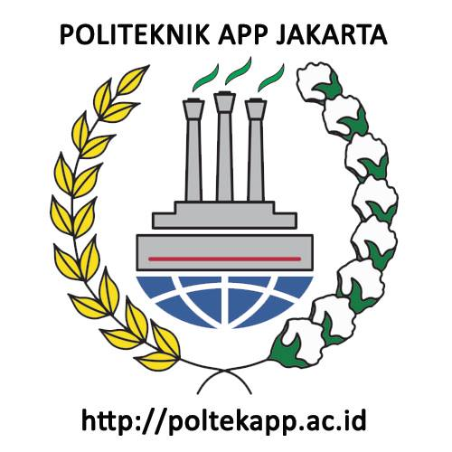

library("tidyverse")
library("readxl")
library("dplyr")Pengaruh Nilai Ekspor Minyak Mentah Bagi Perekonomian Indonesia Tahun 2013-2022
Metode Penelitian Politeknik APP Jakarta

1 Pendahuluan
1.1 Latar belakang
Dalam perspektif yang lebih luas, pembangunan ekonomi dipandang sebagai proses multidimensi yang mencakup berbagai perubahan mendasar pada struktur sosial, sikap masyarakat, dan institusi nasional. Selain itu, pembangunan ekonomi juga berusaha untuk mempercepat pertumbuhan ekonomi, mengurangi ketimpangan distribusi pendapatan, dan mengentasan kemiskinan (Todaro, 2007). Partum ekonomi adalah salah satu indikator kemajuan pembangunan. Pada dasarnya, indikator ini mengukur kemampuan suatu negara untuk meningkatkan outputnya lebih cepat daripada tingkat pertumbuhan penduduknya.
Menurut Amir (2007), partum ekonomi didefinisikan sebagai siklus peningkatan produksi per kapita, atau output, dalam jangka waktu yang lama. perkembangan aktivitas ekonomi yang menghasilkan peningkatan produksi barang dan jasa serta peningkatan kemakmuran. Untuk ekonomi bertahan, pertumbuhan ekonomi harus cepat dan berkelanjutan. Salah satu konsekuensi dari stagnasi pertumbuhan ekonomi di banyak negara Afrika adalah kemiskinan yang persisten. Akibatnya, ekonom di negara-negara maju dan sedang berkembang telah sangat memperhatikan masalah pertumbuhan ekonomi (Tambunan, 2000).
Pada akhir tahun 1970-an, para ekonom telah meneliti banyak masalah yang berhubungan dengan pertumbuhan ekonomi. Namun, mereka masih belum mencapai konsensus tentang penyebab utama pertumbuhan tersebut. Penyediaan tenaga kerja, stok modal, dan kemajuan teknologi adalah fokus utama dari aliran ekonomi klasik.
Ekspor dan impor memegang peran penting dalam kegiatan perekono- mian suatu negara. Dalam proses produksi, bahan baku dan barang modal yang diperlukan untuk proses produksi akan diimpor, yang akan menghasilkan nilai tambah. Nilai Produk Domestik Bruto adalah total nilai tambah yang dihasilkan oleh seluruh unit produksi perekonomian. Menurut para ahli, ekspor dan investasi adalah “engine of growth”. Oleh karena itu, peningkatan ekspor dan investasi umumnya mendorong pertumbuhan ekonomi yang cepat dan berkelanjutan. Ekspor minyak dan gas (migas) dan non-migas berbeda dalam perdagangan luar negeri.Ekspor minyak Indonesia cenderung berfluktuasi setiap tahun dan pada akhirnya mengalami penurunan yang memaksa negara untuk
Karena harga minyak mentah dunia mulai naik dengan sangat cepat dan impor Indonesia terus meningkat seiring dengan peningkatan total konsumsi minyak dalam negeri, penurunan produksi dan ekspor yang cukup tajam ini sangat merugikan negara.
Peningkatan kebutuhan bahan bakar minyak dalam negeri tidak diikuti oleh produksi bahan bakar minyak dalam negeri, yang menyebabkan pemerintah mengimpor sebagian kekurangan konsumsi bahan bakar minyak. Ketergantungan Indonesia pada bahan bakar impor semakin memberatkan pemerintah karena besarnya subsidi yang harus dibayar karena kenaikan harga minyak global (Wasista 2011). Tidak peduli bagaimana harga minyak dunia berfluktuasi dipasaran internasional, masalah ekspor dan impor minyak bumi Indonesia adalah masalah besar yang menarik perhatian dunia internasional belakangan ini peningkatan harga minyak dari tahun ke tahun.
1.2 Ruang lingkup
Ruang lingkup pembahasan masalah sesuai dengan variable yang akan digunakan pada analisis kali ini, yaitu mengenai pengaruh nilai ekspor minyak mentah terhadap perekonomian Indonesia. Dalam menganalisis bagaimana dampak ekspor minyak mentah terhadap perekonomian di Indonesia dalam jangka waktu 10 tahun.
1.3 Rumusan masalah
Apakah nilai ekspor minyak mentah mempengaruhi laju PDB di Indonesia?
1.4 Tujuan dan manfaat penelitian
Tujuan penelitian ini untuk mengetahui apakah nilai ekspor minyak mentah berpengaruh terhadap perekonomian Indonesia
Manfaat agar semua orang tau bahwa ekspor minyak mentah berpengaruh terhadap PDB Indonesia.
1.5 Package
Ini tidak wajib ada di tulisan anda tapi anda dapat menunjukkan Packages yang digunakan antara lain sebagai berikut:
2 Studi pustaka
Menurut Apridar, 2009 dalam Jamilah, dkk 2016 Ekspor adalah proses pertukaran barang dari suatu negara ke negara lain yang mendapat izin secara legal untuk melakukan ekspor. Ekspor merupakan bagian penting dalam memberikan neraca pembayaran dari negara. Dari pandangan tersebut dapat di tarik 10 kesimpulan bahwa teori ekspor merupakan suatu kegiatan menjual atau menyalurkan barang dari dalam negeri.
Menurut Sukirno (2013:34) dalam bukunya makroekonomi teori pengantar, Produk Domestik Bruto (PDB) dapat diartikan sebagai nilai barang-barang dan jasa-jasa yang diproduksikan di dalam negara dalam satu tahun tertentu.
3 Metode penelitian
3.1 Data
Data yang digunakan merupakan Nilai Ekspor Minyak Mentah dan Perekonomian Indonesia Tahun 2013-2022.
| Tahun | M |
|---|---|
| 2013 | 10,204.70 |
| 2014 | 9,215.00 |
| 2015 | 6,479.40 |
| 2016 | 5,196.70 |
| 2017 | 5,354.90 |
| 2018 | 5,151.90 |
| 2019 | 1,726.60 |
| 2020 | 1,396.90 |
| 2021 | 2,795.90 |
| 2022 | 1,615.30 |
| Tahun | PDB |
|---|---|
| 2013 | 5.55 |
| 2014 | 4.99 |
| 2015 | 4.78 |
| 2016 | 5.06 |
| 2017 | 5.03 |
| 2018 | 5.17 |
| 2019 | 5.04 |
| 2020 | -2.03 |
| 2021 | 3.25 |
| 2022 | 5.41 |
penelitian ini menggunakan data Nilai Ekspor Minyak Mentah dan Perekonomian Indonesia Tahun 2013-2022, dari Badan Pusat Statistik (BPS).
Baca data
#import dataset
library(readxl)
dat<-read_excel('dat.xlsx')
head(dat)# A tibble: 6 × 3
tahun M PDB
<dbl> <dbl> <dbl>
1 2013 10205. 5.55
2 2014 9215 4.99
3 2015 6479. 4.78
4 2016 5197. 5.06
5 2017 5355. 5.03
6 2018 5152. 5.17library("ggplot2")
library("readxl")
library("dplyr")
ggplot(data=dat,aes(x=PDB,y=M))+
geom_point(color="blue",size=2)+
labs(title="tabel 1. Hubungan Antara Perekonomian Indonesia dan Nilai Ekspor Minyak Mentah",
x="Perekonomian Indonesia",
y="Nilai Ekspor Minyak Mentah",
caption = "sumber : Badan Pusat Statistik")+
theme_classic()3.2 Metode analisis
Metode yang dipilih adalah regresi univariat atau Ordinary Least Square (OLS) dengan 1 variabel independen. Penelitian ini merbaksud mencari hubungan antara Nilai Ekspor Minyak Mentah (M) dan Perekonomian Indonesia (PDB). Spesifikasi yang dilakukan adalah:
\[ y_{t}=\beta_0 + \beta_1 x_t+\mu_t \] di mana \(y_t\) adalah M dan \(x_t\) adalah PDB.
4 Pembahasan
4.1 Pembahasan masalah
Dikarenakan saya menggunakan OLS, Pembahasan saya disini hanya menghubungkan Angka Partisipasi Sekolah dan Jumlah Penduduk Miskin Data tersebut saya satukan untuk saya regresi dan tampilannya seperti ini.
#import dataset
library(readxl)
dat<-read_excel('dat.xlsx')
head(dat)# A tibble: 6 × 3
tahun M PDB
<dbl> <dbl> <dbl>
1 2013 10205. 5.55
2 2014 9215 4.99
3 2015 6479. 4.78
4 2016 5197. 5.06
5 2017 5355. 5.03
6 2018 5152. 5.174.2 Analisis masalah
Hasil regresinya adalah
reg1<-lm(PDB~M,data=dat)
summary(reg1)
Call:
lm(formula = PDB ~ M, data = dat)
Residuals:
Min 1Q Median 3Q Max
-5.0631 -0.4155 0.3399 0.8330 2.3029
Coefficients:
Estimate Std. Error t value Pr(>|t|)
(Intercept) 2.5596549 1.3207765 1.938 0.0886 .
M 0.0003389 0.0002304 1.471 0.1795
---
Signif. codes: 0 '***' 0.001 '**' 0.01 '*' 0.05 '.' 0.1 ' ' 1
Residual standard error: 2.151 on 8 degrees of freedom
Multiple R-squared: 0.2129, Adjusted R-squared: 0.1145
F-statistic: 2.164 on 1 and 8 DF, p-value: 0.17955 Kesimpulan
Dari hasil regresi dapat dapat disimpulkan, bahwa Nilai ekspor minyak mentah berpengaruh terhadap perekonomian Indonesia tahun 2013-2022. Setiap kenaikan nilai ekspor minyak mentah dengan diasumsikan nilainya 1, maka dapat meningkatkan PDB sebesar 0.0003389.
6 Referensi
Badan Pusat Statistik. (n.d). Retrieved January 25, 2024, from https://www.bps.go.id/id/statistics-table/2/MTA0IzI=/pertumbuhan-ekonomi–triwulan-iii-2023.html.
Badan Pusat Statistik. (n.d). Retrieved January 25, 2024, from https://www.bps.go.id/id/statistics-table/1/MTAwNCMx/nilai-ekspor-dan-impor-migas-juta-us-1996-2022.html.
Mustika, M., Haryadi, H., & Hodijah, S. (2015). Pengaruh Ekspor dan Impor Minyak Bumi terhadap Pertumbuhan Ekonomi Indonesia. Jurnal Perspektif Pembiayaan dan Pembangunan Daerah, 2(3), 107-118.